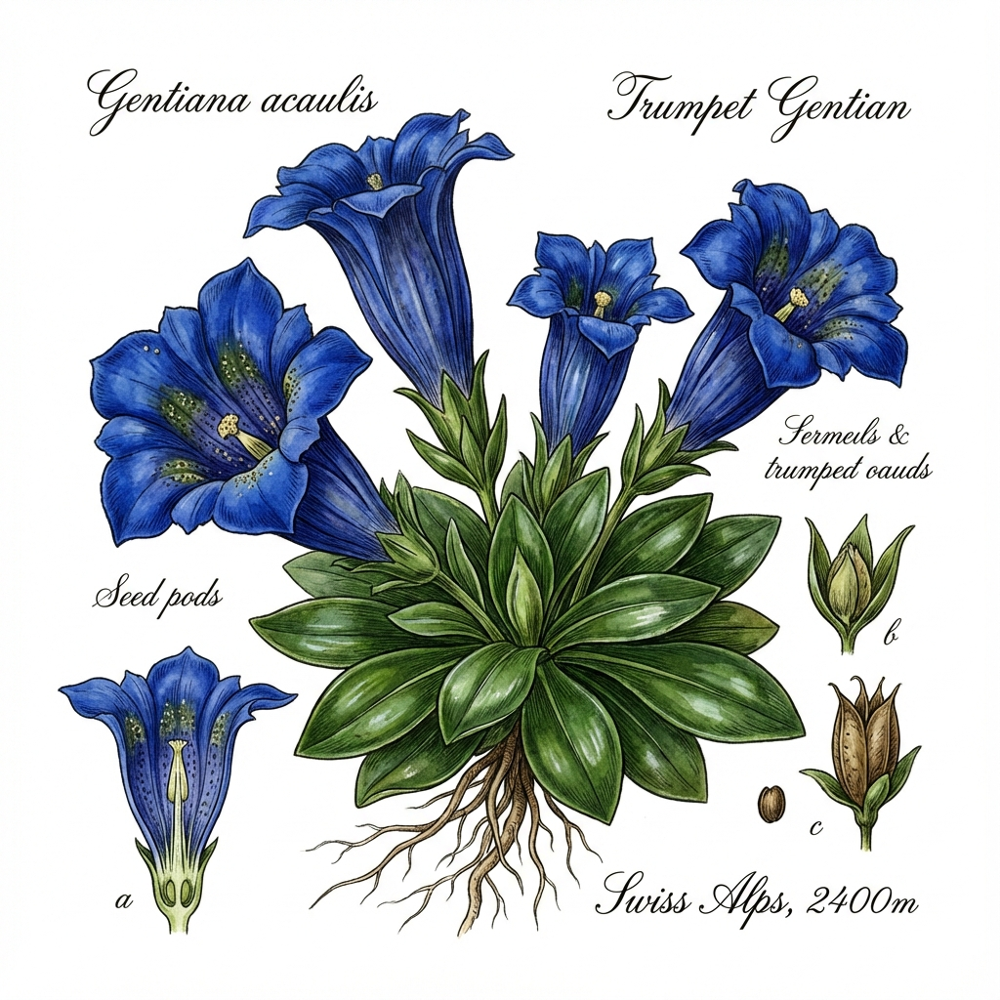

💙'">
1. Stängelloser Enzian
Gentiana acaulis
🗣️ Lokale Namen: Schusternagel, Enzian-Glöckli (Schweizerdeutsch)
🔍 Erkennung
- Intensiv blaue, trichterförmige Blüten
- Blüte sitzt direkt auf der Blattrosette
- Glänzend dunkelgrüne, ledrige Blätter
- 5-10 cm hoch
📍 Fundorte in der Schweiz
Alpwiesen, 1500-3000m. Wallis, Graubünden, Berner Oberland, Tessin.
📅 Sammelzeit
Wurzeln: Traditionell im Herbst (heute geschützt!)
💊 Heilwirkung
- Verdauungsfördernd - Bitterstoffe regen Verdauung an
- Appetitanregend - Bei Appetitlosigkeit
- Symbol der Alpen - Kulturelle Bedeutung
⚠️ Geschützt! Nicht sammeln. Nur aus lizenzierten Quellen.